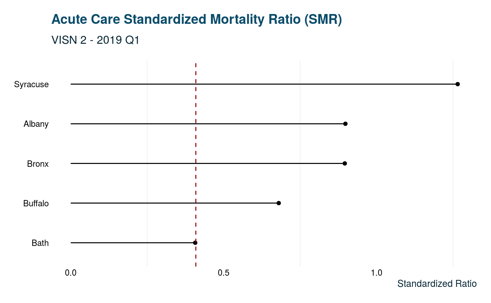
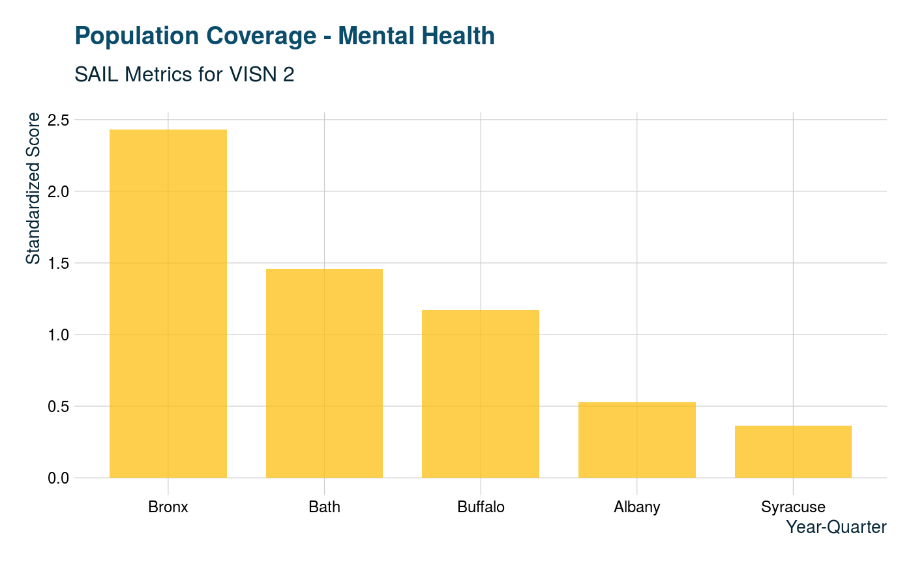
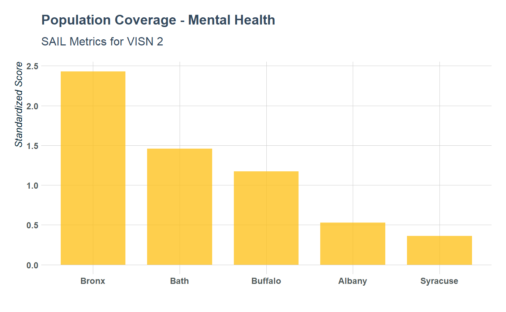

VA SAIL metrics are a way of summarizing VA hospital performance data. Individual data sets by location are available for download from VA.gov. These are excel datasets formatted with banners and special characters.
When provided a file’s url, sail_tidy downloads, imports, and wrangles the dataset into a format that’s easier to utilize in R.
library(tidyVA)
library(ggplot2)
library(dplyr)
#>
#> Attaching package: 'dplyr'
#> The following objects are masked from 'package:stats':
#>
#> filter, lag
#> The following objects are masked from 'package:base':
#>
#> intersect, setdiff, setequal, union
albany_sail <- sail_tidy("https://www.va.gov/QUALITYOFCARE/SAIL_FY19_Q1/SAIL-2_albany_fy19q1.xlsx")
glimpse(albany_sail)
#> Observations: 79
#> Variables: 6
#> $ Measure <chr> "Acute care mortality", "1. Acute care Standar…
#> $ `Measure Unit` <chr> NA, "O/E", "O/E", "%", "%", "%", "%", "%", NA,…
#> $ `Best 10%` <chr> NA, "0.469", "0.740", "7.219", "5.676", "7.820…
#> $ `10th-50th-90th ptile` <chr> NA, "0.469 - 0.857 - 1.193", "0.740 - 0.952 - …
#> $ Site <chr> "Albany", "Albany", "Albany", "Albany", "Alban…
#> $ Value <chr> NA, "0.898", "0.923", "8.191", "8.726", "7.667…Using map_df from the purrr package you can create a data frame of metrics from several sites:
albany <- "https://www.va.gov/QUALITYOFCARE/SAIL_FY19_Q1/SAIL-2_albany_fy19q1.xlsx"
syracuse <- "https://www.va.gov/QUALITYOFCARE/SAIL_FY19_Q1/SAIL-2_syracuse_fy19q1.xlsx"
bath <- "https://www.va.gov/QUALITYOFCARE/SAIL_FY19_Q1/SAIL-2_bath_fy19q1.xlsx"
buffalo <- "https://www.va.gov/QUALITYOFCARE/SAIL_FY19_Q1/SAIL-2_buffalo_fy19q1.xlsx"
bronx <- "https://www.va.gov/QUALITYOFCARE/SAIL_FY19_Q1/SAIL-2_bronx_fy19q1.xlsx"
links <- c(albany, syracuse, bath,
buffalo,bronx)
data <- purrr::map_df(links, sail_tidy)This can then easily be explored within the tidyverse
data %>%
distinct(Measure)
#> # A tibble: 79 x 1
#> Measure
#> <chr>
#> 1 Acute care mortality
#> 2 1. Acute care Standardized Mortality Ratio (SMR)
#> 3 2. Acute care 30-day Standardized Mortality Ratio (SMR30)
#> 4 a. AMI RSMR
#> 5 b. CHF RSMR
#> 6 c. Pneumonia RSMR
#> 7 d. COPD RSMR
#> 8 e. Stroke RSMR
#> 9 Avoidable adverse events
#> 10 1. In-hospital complications
#> # … with 69 more rows
data %>%
filter(Measure =="1. Acute care Standardized Mortality Ratio (SMR)") %>%
mutate(SMR = as.numeric(Value)) %>%
ggplot(aes(reorder(Site, SMR), SMR)) +
geom_point() +
geom_segment(aes(x = Site, y = 0,
xend = Site, yend = SMR)) +
coord_flip() +
geom_hline(yintercept = 0.409, lty = "dashed", color = "darkred") +
labs(x = NULL, y = "Standardized Ratio") +
ggtitle("Acute Care Standardized Mortality Ratio (SMR)",
subtitle = "VISN 2 - 2019 Q1") +
theme_va(grid = FALSE)
data %>%
filter(Measure == "1. Population coverage") %>%
mutate(Value = as.numeric(Value)) %>%
arrange(desc(Value)) %>%
ggplot(aes(forcats::fct_inorder(Site), Value)) +
geom_col(alpha = .75, fill = "#fdbf11", width = .75 ) +
labs(y = "Standardized Score", x = "Year-Quarter",
color= "Site") +
ggtitle("Population Coverage - Mental Health",
subtitle = "SAIL Metrics for VISN 2") +
theme_va(grid = "XY")
data %>%
filter(Measure == "1. Population coverage") %>%
mutate(value = as.numeric(Value),
best_10 = as.numeric(`Best 10%`)) %>%
arrange(desc(value)) %>%
ggplot(aes(forcats::fct_inorder(Site), value)) +
geom_point() +
geom_segment(aes(x = Site, y = best_10,
xend = Site, yend = value)) +
coord_flip() +
geom_hline(aes(yintercept = best_10),
lty = "solid", color = "#fdbf11") +
labs(x = NULL, y = "Standardized Score") +
ggtitle("VISN 2 Mental Health Coverage",
subtitle = "Distance from Best 10%") +
theme_va(grid = "Y") 